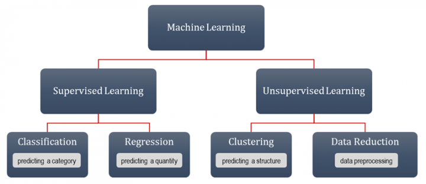

Machine Learning (nur Pro)
Machine-Learning
Einführung
Machine Learning (oder Maschinenlernen) ist eine Methode zur Datenanalyse, die Informationen direkt den Daten entnimmt und "erlernt", um das Erstellen von analytischen Modellen zu automatisieren. Die Algorithmen des Maschinenlernens nutzen verschiedene Optionen, um ihr Wissen aufzubauen: direkt aus den Daten, durch das Identifizieren von Mustern und durch das Fällen von Entscheidungen.
Es gibt drei Arten von Aufgaben im Machine Learning, das überwachte Lernen (Supervised), das unüberwachte Lernen (Unsupervised) und die Datenreduktion.
- Überwachtes Lernen: Prädiktive Modelle werden auf Grundlage von Eingabedaten entwickelt und neue Beobachtungen werden vorher definierten Gruppen zugeordnet oder ihre Antwortwerte prognostiziert.
- Unüberwachtes Lernen: Daten werden basierend auf den Eingabedaten ohne vordefinierte Gruppen analysiert und gruppiert. Es kann verwendet werden, um Beobachtungen oder Variablen in Gruppen zu klassifizieren und zugrunde liegende Muster zu identifizieren.
- Datenreduktion: Die Dimensionalität oder Komplexität der Daten wird reduziert, während die wichtigsten Informationen bewahrt werden, wodurch die Daten einfacher analysiert und visualisiert werden können.

Werkzeuge des Maschinenlernens in Origin
Origin bietet verschiedene Werkzeuge für das Machine Learning, die Sie beim Untersuchen Ihrer Daten unterstützen.
| Klassifikation |
Regression |
Clustern |
Datenreduktion |
|
|
|
|
|